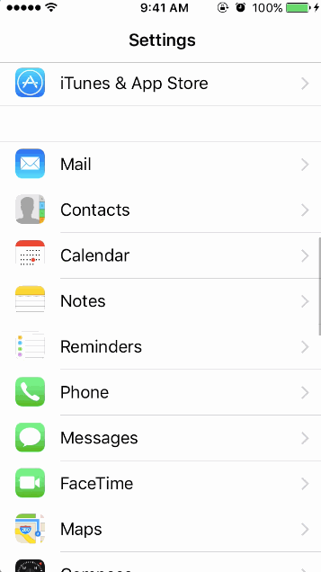
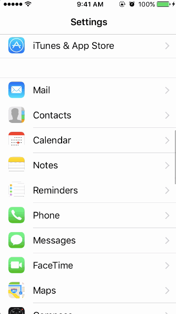
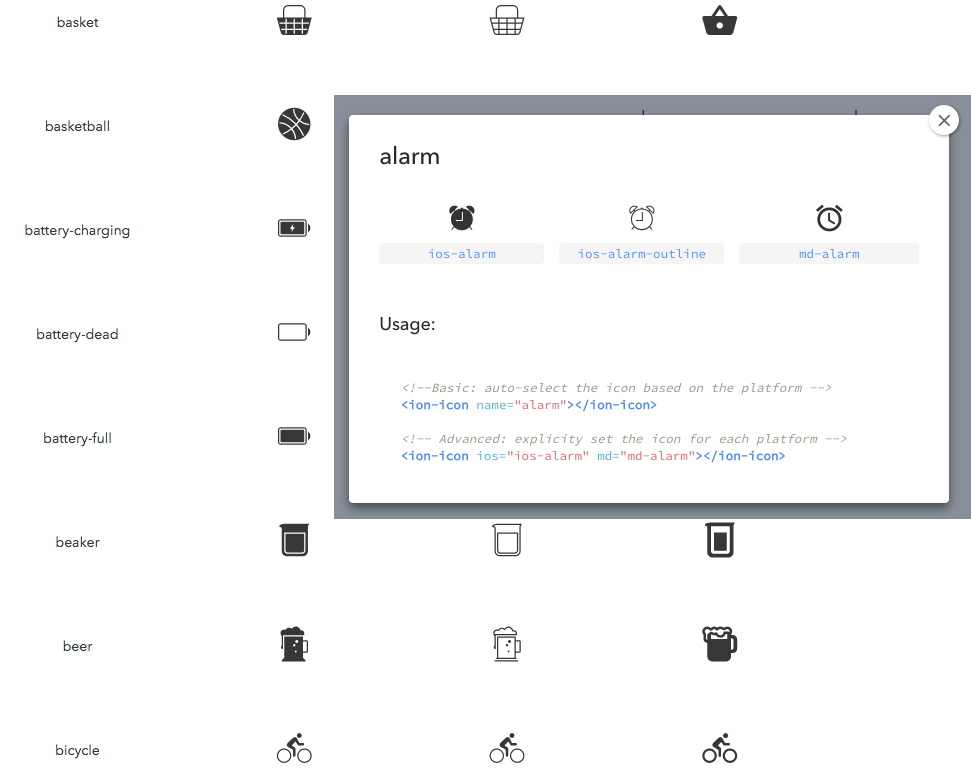

Building Hybrid Mobile Apps with Ionic 2
- Hybrid Mobile and Web App Developer
- @ Recurship
- @ Upwork
- Developing beautiful Ionic apps for the past 2 years
Sarah Ahmed

Overview
- Native vs Hybrid Apps
- Intro Phonegap / Cordova
- Intro Ionic
- UI Components
- Ionic Native
- Theming
- Navigation
- Ionic CLI
“I want to build an app!”
More Platforms. More Problems.
- Proficiency in each platform required
- Entirely separate code bases
- Timely & expensive development

Java

Objective-C / Swift

C#
Hybrid Apps!
Write once, run anywhere!
Web
Developer
Web
Developer
Web
Developer
Cordova / Phonegap
Tools that package HTML5 , CSS and Javascript into multi-platform native apps
// MainActivity.java
public class MainActivity extends CordovaActivity
{
@Override
public void onCreate(Bundle savedInstanceState)
{
super.onCreate(savedInstanceState);
// Set by Native SDKs...
Are Great!
Common UI, APIs, views, navigation, stack history, transitions, interactions, gestures, etc.
 

Web Technologies You Already
Know & Love


(You'll feel right at home)
Superpowered by
Angular 2
Extends the HTML vocabulary
Proven for large-scale app development
UI Components using Directives & Services
Sass!
CSS generated from the Sass preprocessor
Quickly give your app its own look and feel
CSS designed to be easily overridden
Variables based with default settings
How it all comes together
- Your App
- Ionic
- Angular
- WebView (Cordova)
- Native App
Platform Continuity
Matches the look-and-feel of the platform it’s displayed on
with a single code base
Construct User Interface in no time with
Ionic
Components
Components
- ActionSheets
- Alerts
- Buttons
- Cards
- DateTime
- Inputs
- Lists
- Loading
- Menus
- Popover
- Range
- SearchBar
- Segment
- Slides
- Tabs
- Toast
- Toggle
Add native functionality to your app with
Ionic
Native
Ionic Native
A TypeScript wrapper for Cordova/PhoneGap
- Battery Status
- Call Number
- Camera
- Device Motion
- Geolocation
- Insomnia
- Keyboard
- Local Notifications
- Pedometer
- Shake
- SMS
- Splash Screen
- SQLite
- Text To Speech
- Vibration
And many more ...
Ionic Native
Example - Camera plugin
import { Camera } from '@ionic-native/camera';
constructor(private camera: Camera) { }
...
this.camera.getPicture().then((imageData) => {
let base64Image = 'data:image/jpeg;base64,' + imageData;
});
Ionic Native
Mocking Plugins - Test native functionality in the browser
import { Camera } from '@ionic-native/camera';
class CameraMock extends Camera {
getPicture() {
return new Promise((resolve, reject) => {
resolve("BASE_64_ENCODED_DATA_GOES_HERE");
})
}
}
providers: [
{ provide: Camera, useClass: CameraMock }
]
Ionicons
Customize the look of your app with
Ionic
Theming
Theming
Step 1: Update $colors map in variables.scss
$colors: (
primary: #488aff,
secondary: #32db64,
danger: #f53d3d,
twitter: (
base: #55acee,
contrast: #ffffff
)
);
Step 2: Use it anywhere
Toolbar
my-component {
background: color($colors, twitter, base); }
my-component {
background: #55acee; }
Platform Specific Styles
Styles can be targeted to a specific mode
.button-md {
background-color: #ff0000;
}
.button-ios {
background-color: #00ff00;
}
.button-wp {
background-color: #0000ff;
}
Overriding Ionic Sass Variables
$background-color: color($colors, light);
$toolbar-background: color($colors, primary, base);
Config
Configure your entire app
IonicModule.forRoot(MyApp, {
mode: 'wp',
backButtonText: 'Go Back'
})
Config
Configure Specific Platforms
IonicModule.forRoot(MyApp, {
tabsPlacement: 'bottom',
platforms: {
ios: {
tabsPlacement: 'top',
}
}
})
Move Around
Navigation /
Routing
Navigation / Routing
Routing in Web App and Mobile App is NOT THE SAME
Mobile App maintains stacks of pages
Page - A component that takes up the whole screen
push()
pop()
setAsRoot()
npm install -g ionic cordova
ionic start myApp --v2
ionic serve
Boilerplate app structure ready for customization
LiveReload both local and native builds
Build and run native apps
Get Started with Ionic!
Getting started guide
ionicframework.com/getting-started
Documentation
ionicframework.com/docs
Visit the Community Forum
forum.ionicframework.com
Contribute on GitHub
github.com/driftyco/ionic